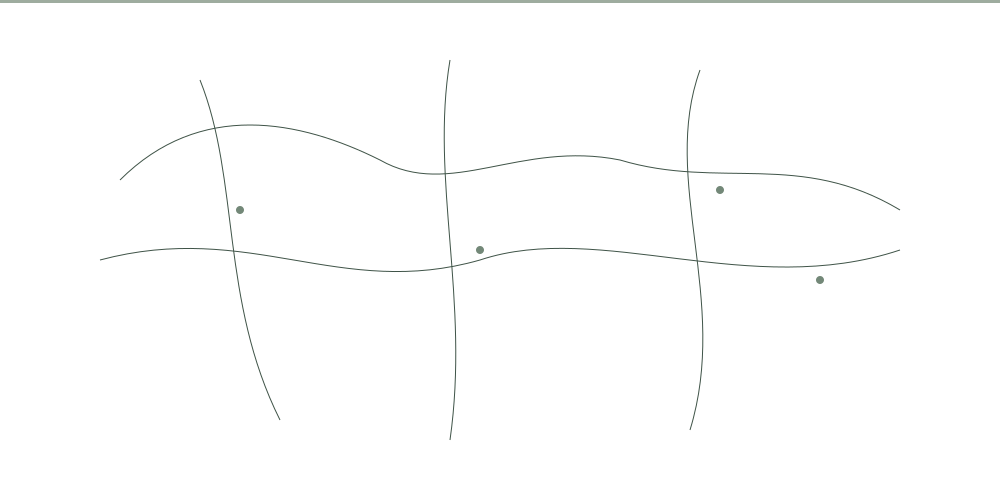

INDEPENDENT ASSESSMENT FRAMEWORK
Evidence focused analysis of public safety, community wellbeing, disability inclusion, economic resilience and social cohesion.
ROUTER 448461 conducts structured research, evidence review and assessment of complex issues affecting individuals, communities and public systems.
Assessment of violence, threats, harm prevention and factors affecting community safety.
Research into accessibility, barriers, participation and protection.
Analysis of employment, opportunity, economic stability and community resilience.
Research into trust, cooperation, community relationships and inclusion.